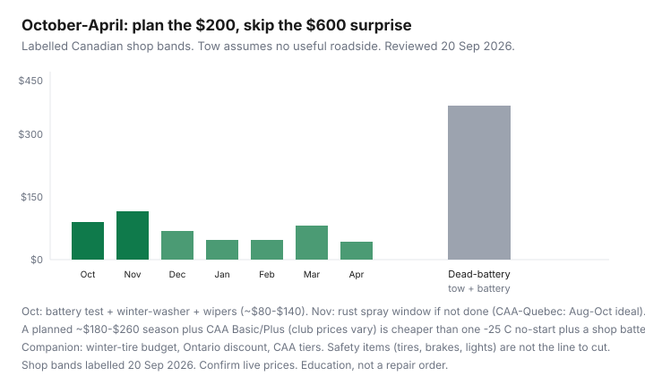

Transportation · Canada
How to cut winter car maintenance costs in Canada without skipping safety
Winter in Canada turns cheap neglect into a tow: a five-year battery, summer wipers, 20 PSI after a cold snap, and an underbody that has not seen a wash since November. The expensive version is a Sunday no-start plus a shop battery. The cheap version is an October checklist and a few brine washes. Safety items — tires, brakes, lights, defrost — are not the line you cut. This is an October–April calendar with salt-province context.
Rubber: winter-tire budget and Ontario’s discount. Rust: oil spray vs coatings. Roadside: CAA tiers.
Disclosure: Auto-parts retailers and CAA memberships are offer types. Saving Optimizer may earn a commission if we later add partner links. We do not currently claim shop or club partnerships. Shop prices are labelled bands, not a work order.
Key takeaways
- Test the battery in October. A failed load test is a $150–$300 part on your schedule, not a $200–$400 tow plus a Sunday shop battery.
- Winter-rated washer fluid, wipers that clear slush, and a working heater/defrost are safety. Cabin filters ($20–$60 DIY) help the heater move air.
- Tire pressure falls about 1 PSI per 3–4 °C. A cold snap turns a “fine in October” tire into a warning light and a wear pattern. This is not a substitute for winter tires.
- Underbody washes after brine events matter as much as a rust spray. A heated garage with a salted car speeds corrosion (CAA-Québec, 31 Jul 2026).
- Budget $180–$260 of planned bits plus a roadside path (CAA or a card you will actually call). Do not skip tires or brakes to “save” the envelope.
Battery, wipers, and fluid checks that prevent tow bills
Cold cuts cranking amps. A battery that is five years old in October is a January appointment. Many Canadian parts counters will load-test for little or nothing. Replace on a weekday. Keep the terminals clean. If the car is a second VIN you barely drive, batteries die from sitting — that is a maintainer or a sale, not more booster cables.
Wipers: winter blades or a quality beam blade you will replace when they smear. Washer fluid: −40 °C Canadian mix, not leftover summer blue. A $8 jug is cheaper than a blind merge. Check that the rear wiper exists if you own a crossover you cannot see out of.
Underbody washes after brine events
Municipal brine sticks. When a wash bay is open above freezing, do the underbody and wheel wells — not just the hood Instagram. Frequency: after the first heavy salt week, again mid-winter, and a thorough April wash. Pair with the rust calendar (CAA-Québec prefers spray in August–October on a dry car). Touch paint chips before they bloom. Skip the $90 “interior detail” if the choice is that or an underbody wash.
Tire pressure in cold snaps
Air contracts. A set at 35 PSI in a 15 °C garage can sit near 30 PSI at −15 °C. That is enough for a warning light, a sloppy footprint, and a shoulder you did not mean to wear. Check cold pressure against the door sticker, not the sidewall maximum. Nitrogen marketing is optional; a $2 gauge is not. This does not replace winter or all-weather rubber — see the tire guides. Québec’s winter-tire mandate and Ontario’s insurance discount are separate products from PSI.
Cabin filter and heater efficiency tips
- A clogged cabin filter makes the blower sound busy and still fog the glass. Many are a $20–$60 glovebox job; some cars hide them.
- Clear the air intake at the base of the windshield of leaves and snow so the heater has air to move.
- Use recirculate once the cabin is warm, not while the glass is iced — you want dry air on the windshield first.
- A blocked radiator or low coolant is a shop item, not a YouTube flush in January.
DIY vs shop: what is safe to self-serve
| Usually DIY | Shop / pro |
|---|---|
| PSI, washer fluid, wiper swap, cabin filter (if accessible), battery terminal clean, underbody wash | Brakes, steering, rusted brake lines, coolant on many modern cars, ADAS calibrations, winter-tire mount if you lack a torque wrench |
| Battery swap on simple trays with the radio code in hand | Batteries under seats or in the trunk with a BMS; start-stop AGM that must be registered |
A $40 mistake on a battery clamp is still cheaper than a tow. A $40 mistake on brakes is not. Ratehub’s 2026 maintenance placeholder is $120/month on the blended average — your winter envelope can be lumpy (tires, battery) and quiet in February if October was honest.

Budget calendar from October to April
- October: battery test, wipers, −40 fluid, PSI, cabin filter, book rust spray if that is your system, book tire swap when daily temps cross ~7 °C.
- November: confirm roadside path (CAA number in the phone). First underbody wash after brine.
- December–February: PSI after each deep cold snap; washer top-ups; one mid-winter wash when a bay is open.
- March: inspect pads and lights; note rust chips.
- April: full wash, store winters correctly, claim the Ontario discount if you have not (receipts).
Worked envelope (labelled): battery $0 if it passes, else $200; wipers $40; fluid $16; two washes $40; cabin filter $35; rust oil $140. Total if the battery lives: ~$270 including spray, or ~$130 without. Emergency path: tow $150–$300 without useful roadside + battery $250 = $400–$550 and a ruined Monday.
Linking maintenance to insurance and CAA choices
Roadside is not maintenance. A club membership (CAASCO Basic $80 / Plus $124 on the companion page, other clubs differ) pays for the day the October test was wrong. Credit-card roadside is only useful if you will call that number at −22 °C and the tow distance matches your highway. Insurer add-ons follow the VIN. Pick one dispatch path.
Insurance: winter-tire discounts in Ontario are 2–5% when you actually claim them. Honest kilometres after a WFH winter can lower a premium at renewal — legally, with a coverage sheet (rating levers). A claim for a slide you could have avoided with winters is the expensive way to “save” on rubber.
Do not cut: winter or all-weather tires that match your climate law and insurer, brake work, lights, and a battery that failed a test. Do cut: interior details, unused oil-change coupons, a third roadside product, and dealer winter “packages” that reprint the October list at triple the parts price.
Sources & date stamps
- CAA-Québec rust and wash guidance — heated-garage warning; Aug–Oct spray window. Updated 31 July 2026.
- Companion winter-tire, Ontario discount, and CAA membership guides — CAASCO Everyday $30 / Basic $80 / Plus $124 / Premier $154 reviewed 20 Sep 2026.
- Ratehub 2026 TCO maintenance placeholder $120/month (29 Apr 2026) — national average, not your envelope.
- TRAC winter-tire cost calculator (companion tire article) — wear model, not a pressure lecture.
Frequently asked questions
What winter car maintenance is actually worth paying for?
Battery test and replacement if it fails, winter washer fluid, wipers, correct PSI, underbody washes, and tires that match your climate. Skip cosmetic packages. Do not skip brakes or lights.
How often should I wash a car in a Canadian winter?
After the first heavy brine, again mid-winter when a bay is open, and thoroughly in April. Underbody and wheel wells matter more than the roof.
Why did my tire pressure light come on overnight?
Temperature dropped. Check cold PSI against the door sticker. Add air; do not ignore it. This is not a reason to stay on summer tires.
Is CAA a substitute for a new battery?
No. CAA is the truck. A five-year battery that failed a load test is a part. Use the club for the surprise, not as a planned charging system.
Can I DIY winter prep?
Fluids, wipers, PSI, many cabin filters, and washes, yes. Brakes, rusty lines, and many modern batteries are shop work. If unsure, it is a shop job.